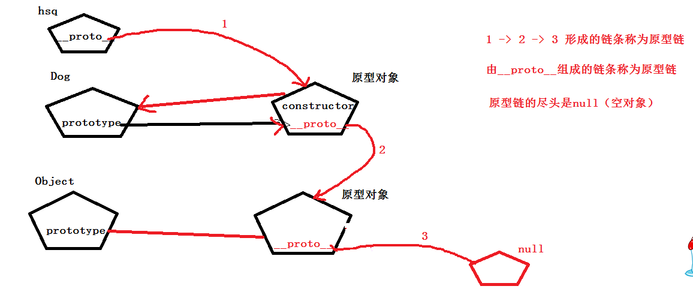

js-闭包和继承
作者： 千锋李文浩
时间： 17/02/22
原型链（重）
由对象的 __proto__ 组成的链条称为原型链，原型链的尽头是null

什么是继承？
1、什么是继承？
1、子类和父类之间的一种关系
2、通过子类创建的实例也能使用父类的属性和方法。
2、为什么要用继承？
1、代码维护性高
2、大大减少代码量
通常在一般的项目里不需要，因为应用简单，但你要用纯js做一些复杂的工具或框架系统就要用到了，比如webgis、或者js框架如jquery、ext什么的，不然一个几千行代码的框架不用继承得写几万行，甚至还无法维护
说明
1、一般我们将公共属性放在构造函数中
2、将固定属性和方法放到构造函数的原型中

继承的方式（重）
1、call/apply继承（构造继承）
原理：使用call/apply让新生成的对象this调用父类，实现给this添加属性
优点：可以实现父类属性的继承
缺点：不能继承父类原型中的属性和方法
推荐指数：***
2、原型继承
原理：将子类的原型prototype指向父类的prototyope
优点：可以实现父类方法的继承
缺点：不能实现属性继承，同时子类的原型发生改变，父类的原型也会发生改变（父类的原型不能改）
推荐指数：*
3、原型copy
原理：将父类原型prototype中的属性和方法复制到子类的原型中
优点：可以实现父类方法的继承，且子类原型修改不会影响父类
缺点：不能实现属性继承，不能实现多级继承
推荐指数：**
4、原型链继承
原理：将子类的原型prototype指向父类的实例
优点：可以实现父类的属性和方法的继承
缺点：不能实现参数传递
推荐指数：***
5、混合继承(最常用)（call/apply + 原型链）
原理：使用call/apply实现属性继承，使用原型链实现方法继承
优点：既可以实现属性继承，也可以实现方法继承
缺点：会出现重复的属性，构造器也会被更改（可以通过代码解决）
推荐指数：*****
完美解决方案：

6、利用空对象作为中介继承（寄生继承）
原理：创建空函数F，将F的原型prototype指向父类的prototype，将子类的原型prototype指向F的实例
优点：实现属性和方法的继承
缺点：无
推荐指数：*****
call/apply继承（重）

原型继承

原型copy

原型链继承

混合继承（call/apply + 原型链）(最常用)

利用空对象作为中介继承（寄生继承）

微信飞机大战分析
1、游戏引擎
分数 score
敌机 enemy {} delete
子弹 bullet {}
游戏状态 start
游戏开始
生成敌机
控制飞行物移动（调用飞行物的move方法）
碰撞检测isImpact
游戏结束
2、英雄机
self 记录图片
width
height
left
top
初始化
移动方法
发子弹
爆炸
销毁
3、敌机（小型、中型、大型）
self 记录图片
width
height
left
top
编号 id
血量
分值
图片（爆炸前和爆炸后）
移动速度
初始化 init
运动 move（碰撞检测，越界检测）
爆炸 bang
销毁 destroy
4、子弹
self 记录图片
width
height
left
top
发子弹时英雄机位置
初始化
移动（碰撞检测、越界检测）
销毁
预习
1、设计模式的种类和写法
1、什么是jQuery？怎么使用jQuery？
2、自学jquery常用api
1、元素选择
2、css 、 addClass 、removeClass
3、find
4、eq
5、animate
6、ajax
7、DOM操作